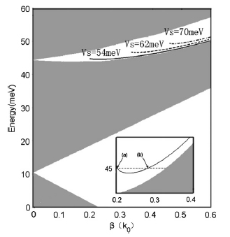
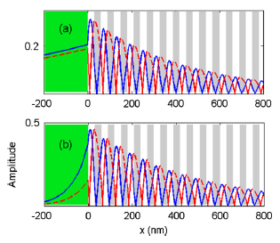

In this research, the concept in photoelectric is applied to quantum mechanics and an interesting result is gotten
We study the electronic surface waves (the so-called Tamm states) localized at the interface between a graphene-based superlattice and a homogeneous graphene by applying suitable electrodes on a graphene sheet. The magnitude as well as the sign of the slope of the Tamm dispersive curve can be flexibly tuned just by varying the external voltage. Particularly, in addition to the conventional forward Tamm states, backward Tamm states in which the wave vector of the electronic surface wave is antiparallel with the group velocity can be realized.
Fig.1 Dispersion diagram of the Tamm states in electronic gaps
Fig.2 Examples of the electronic Tamm states at 44.9 meV.